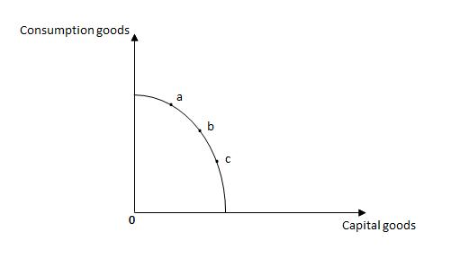
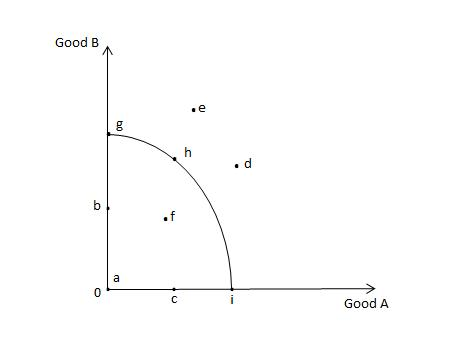

Quiz
Question 1
Profit is the payment made for land resources.
True
False
Question 2
Exhibit 2.7

Refer to Exhibit 2.7, which shows the production possibilities frontier for capital goods and consumer goods. Identify the correct statement.
If the economy is initially at point c, an increase in capital stock will lead to a movement to point b.
If the economy is initially at point b, an increase in capital stock will lead to a movement to point c.
Economic growth will allow the economy to produce at a point that lies on a lower production possibilities frontier.
If the economy is initially at point a, an improvement in the rules of the game will lead to a movement to point c.
Economic growth will allow the economy to produce at a point that lies on a higher production possibilities frontier.
Question 3
Exhibit 2.2

Refer to Exhibit 2.2, which shows the production possibilities frontier for Good A and Good B. If given the quantity of resources and level of technology, which of the following points is unattainable?
e
g
h
b
I
Question 4
In economics, capital is defined as _____
the willingness of business owners to take risks.
the money exchanged in the underground economy.
the number of people in the labor force.
natural resources, such as water, oil, and iron ore.
all human creations used to produce goods and services.
Question 5
Opportunity costs exist because _____
the value of lost opportunities varies.
technology is fixed.
efficiency is measured by the monetary cost of an activity
of comparative advantage.
resources are scarce but wants are unlimited.
Question 6
A country has an absolute advantage in the production of a good if that country _____
can produce the good using fewer resources than another country would require.
has the lowest opportunity cost of producing the good, regardless of whether it is produced using the fewest resources.
has the greatest opportunity cost of producing the good, regardless of whether it is produced using the fewest resources.
has the lowest opportunity cost of producing the good and can sell it at the highest price.
has the greatest opportunity cost of producing the good and can sell it at the highest price.
Question 7
Hans can do 4 loads of laundry or type 6 pages in an hour. Heidi can do 12 loads of laundry or type 8 pages in an hour. Which of the following is correct?
Hans has an absolute advantage in doing laundry.
Heidi has both an absolute and a comparative advantage in doing laundry.
Heidi has both an absolute and a comparative advantage in typing.
Heidi has a comparative advantage in both typing and doing laundry.
Hans has both an absolute and a comparative advantage in typing.
Question 8
Exhibit 2.2
Refer to Exhibit 2.2, which shows the production possibilities frontier for Good A and Good B. When moving from point f to point g, the production of _____
Good B increases and the production of Good A decreases.
both Good A and Good B decreases.
both Good A and Good B increases.
Good A increases without a change in the production of Good B.
Good B increases without a change in the production of Good A.
savings, spending, investment, and capital.
income, interest, and expenditure.
people, money, and machines.
human resources, technology, and government.
natural resources, labor, capital, and entrepreneurial ability.
Question 9
Hans can do 4 loads of laundry and type 6 pages per hour. Heidi can do 12 loads of laundry and type 8 pages per hour. Hans’s opportunity cost of doing one load of laundry is _____
equal to typing 1 1/2 pages.
equal to typing 12 papers.
equal to typing 2/3 of a page.
equal to typing 8 papers.
impossible to compute without additional information.
Question 10
Entrepreneurial ability is rewarded by _____
dividends.
rent.
interest.
profit.
wages.
Question 11
Exhibit 2.2
Refer to Exhibit 2.2, which shows the production possibilities frontier for Good A and Good B. If all of the economy's resources are used efficiently to produce only Good B, then the economy will be at point _____.
i
g
b
h
e
Question 12
In one week, Sami can knit 5 sweaters or bake 240 cookies. In one week, Leila can knit 15 sweaters or bake 480 cookies. Which of the following is correct?
Leila has an absolute and a comparative advantage in both tasks.
Sami has an absolute and a comparative advantage in both tasks.
Leila has an absolute advantage in both tasks and a comparative advantage in knitting sweaters.
Sami has an absolute advantage in both tasks and a comparative advantage in baking cookies.
Sami has an absolute advantage in both tasks and a comparative advantage in knitting sweaters.
Question 13
Rent is the payment received by resource owners for the use of their natural resources.
True
False
Question 14
Exhibit 2.2
Refer to Exhibit 2.2, which shows the production possibilities frontier for Good A and Good B. If all of the economy's resources are used efficiently to produce only Good A, then the economy will be at point _____.
e
b
i
h
g
Question 15
An entrepreneur is _____
a person who is hired by a firm to manage its operations.
a person who is appointed by the board of directors of a firm for a term of five years.
a person who earns profit without accepting any risks.
an organizer who seeks profitable opportunities and is willing to accept risks.
an individual who has an education.
Question 16
Hans can do 4 loads of laundry and type 6 pages per hour. Heidi can do 12 loads of laundry and type 8 pages per hour. Heidi’s opportunity cost of doing one load of laundry is _____
equal to typing 6 pages.
impossible to compute without additional information.
equal to typing 4 pages.
equal to typing 2/3 of a page.
equal to typing 3/2 of a page.
Question 17
Exhibit 2.2
Refer to Exhibit 2.2, which shows the production possibilities frontier for Good A and Good B. Which of the following points represents an inefficient use of the economy’s resources?
f
d
e
h
i
Question 18
An economist would classify 100 shares of Apple Computers as capital.
True
False
Question 19
Exhibit 2.2
Refer to Exhibit 2.2, which shows the production possibilities frontier for Good A and Good B. If resources are used fully and efficiently, then the economy can produce at point(s) _____
a or b
f
d or e
g, h, or i
c